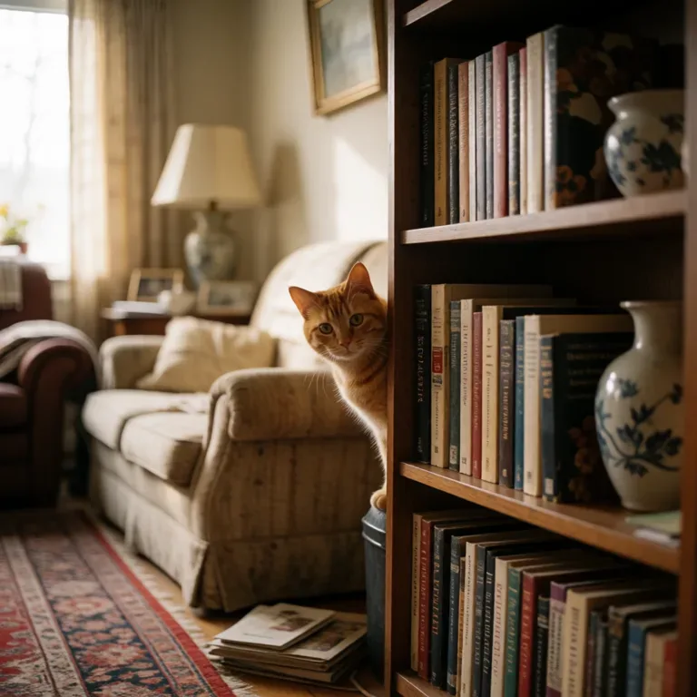

Other things you can do
- Make an imageImagesReadyLast used 11h ago
- Read aloudSpeechReadyLast used 21h ago
- Transcribe audioTranscriptionReadyLast used 20h ago
- Make musicMusicReady
- Make a soundSound effectsReady
- VideoUnavailable
Its engine is recovering after a queue timeout. Ask Sam if you need it.
- EmbeddingsUnavailable
Ask Sam to turn it on for your account.
Your apps
- Robin's personal appLast used 1h ago
- Open WebUILast used 4h ago
- Set upTelegram helper
Recent work
View library


